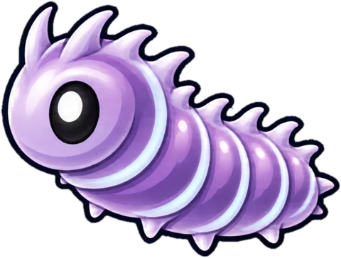

 Ghost
GhostTap a stage to read its story.
Chrysmote is a segmented purple-lavender larva with a single huge round eye at its head-end that gives it a slightly unsettling quality for something so small. It rolls slowly through the valley's leaf-litter, leaving faintly luminous slime-trails that catch moonlight. Unlike other larvae, it is semi-transparent - hold it to the light and the dark outline of the creature inside can be seen stirring. Valley children dare each other to pick one up, and those who do say it makes a gentle singing vibration in the palm.
Field note: Chrysmote's slime-trail glows for precisely one hour after it passes - night-travelers use fresh trails to tell if the valley is safe.
Verdant Valley. Chrysmote and its family are found in the Verdant Valley. See everyone who lives there.
Share a Bond Food that matches its types to become friends. Chrysmote loves:
A Bond Food is not a trick. It joins your spirit with the Kimuro's spirit, and only when it chooses you.
Print the Kimuro adventure packs: mazes, cards, a board game and Bond Mark medals.
See the printable packs